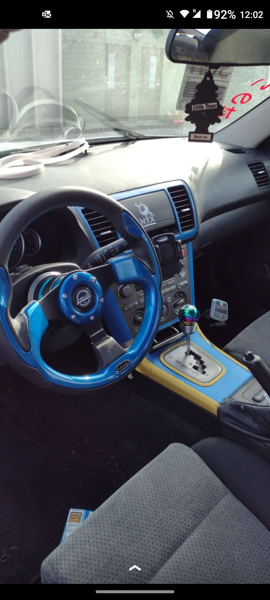
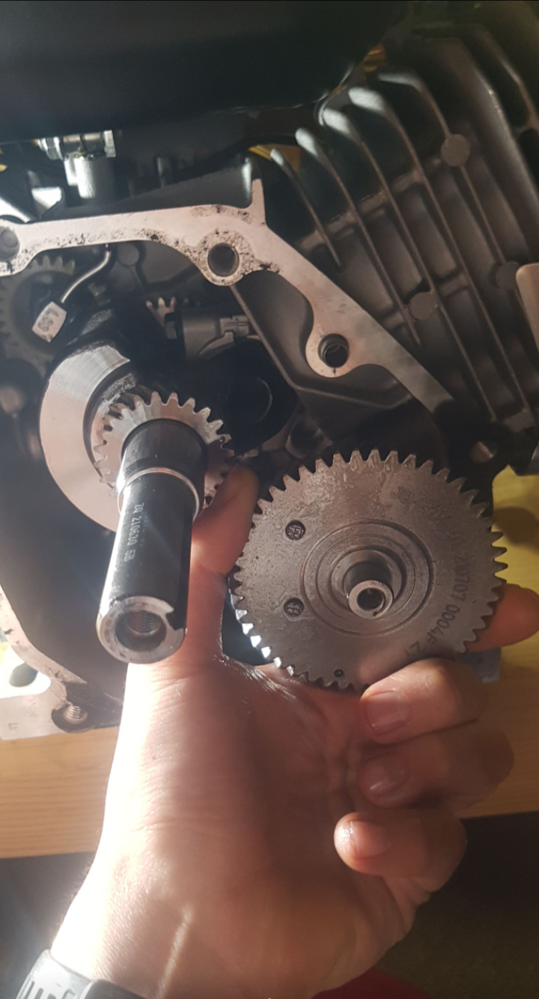
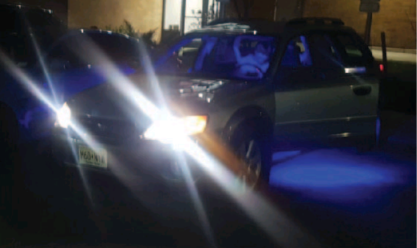

"Hi, my name is Michael A. d’Amore. I am currently studying in the “ischool” with a concentration in information security, web development and project management. I am really interested in the intersection of IT and the automobile industry. I am currently a student supervisor at SU’s makerspace. The makerspace is a student run prototyping shop free for all students and staff. My hobbies include racing, building cars, cooking, building computer and I love sports. Last summer I bought a BMW fixed it up and sold it for a profit. During the school year I am a mechanic on the Syracuse’s Citrus Racing team on the powertrain and aero departments. During my junior year I build a go-kart from scratch in my south campus dorm. I am the middle child of 5 and I have 3 nationalities (Italian, Spanish and American)"
  